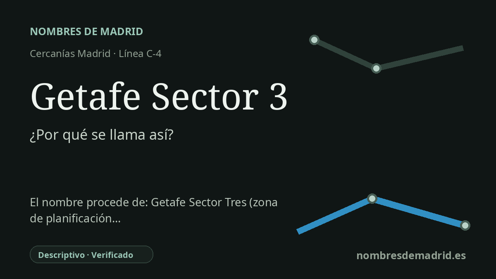

Publicado el · Investigación de Nombres de Madrid · Cómo verificamos cada origen · 7 fuentes consultadas
Respuesta rápida
Getafe Sector 3 es un nombre descriptivo tomado del cercano barrio del Sector III. El nombre del barrio procede de una denominación técnica urbanística usada para un gran desarrollo residencial de finales del siglo XX al oeste de la antigua carretera de Toledo.
La historia del nombre
El nombre Getafe Sector 3 es sencillo, pero dice mucho sobre el origen del lugar. La estación de Cercanías toma el nombre del cercano barrio del Sector III de Getafe, uno de los grandes distritos residenciales levantados al oeste de la A-42, separado del casco urbano tradicional.
El nombre del barrio no procede de una aldea antigua, de un santo, de una finca ni de un rasgo natural. Una síntesis histórica local explica que siguió conociéndose como Sector III por la denominación técnica empleada en el Plan General de Ordenación Urbana. Es decir, una etiqueta de planeamiento acabó convertida en topónimo cotidiano.
El Sector III se urbanizó y construyó principalmente entre 1979 y 1988. Se concibió como una gran área residencial de viviendas unifamiliares adosadas de dos plantas, organizada en urbanizaciones y dotada con el tiempo de grandes avenidas, zonas comerciales, equipamientos deportivos, edificios cívicos y zonas verdes. La página municipal de Getafe lo describe hoy como el barrio más extenso de la localidad y uno de los más importantes, con unos 29.200 habitantes a 1 de enero de 2019.
El apeadero ferroviario llegó después. La prensa contemporánea de El País indica que la estación del Sector III entró en funcionamiento el 28 de mayo de 1995, tras varios retrasos, y que daba servicio al barrio desde la línea Madrid-Parla. Su posición física es algo incómoda respecto al nombre: está en el corredor ferroviario y junto a la carretera del cementerio municipal, al otro lado del eje de la carretera de Toledo respecto a buena parte del barrio al que alude.
La relación concreta con el Cerro Buenavista y los restos de la Guerra Civil no está documentada de forma concluyente. La documentación plenaria municipal de 2023 respalda la existencia de búnkeres del Cerro de los Ángeles y del Sector III cuya inclusión en el catálogo de bienes protegidos de Getafe y posible protección regional fueron solicitadas. Sin embargo, no consta una fuente autorizada para la afirmación concreta de que las excavadoras casi los destruyeron en 1985 y que el alcalde ordenó conservarlos, por lo que ese detalle debe quedar como no verificado salvo que lo confirme un archivo local o un expediente urbanístico.